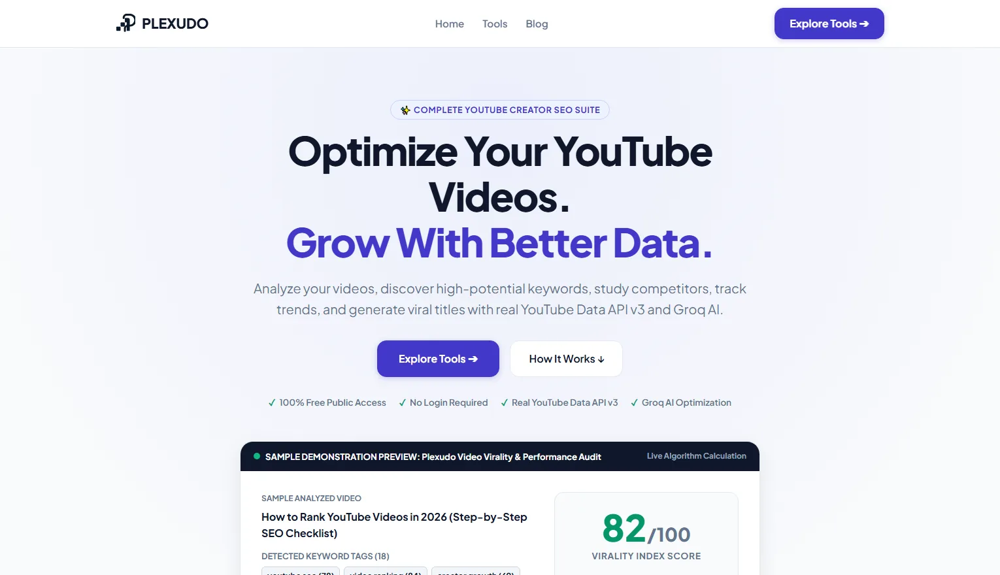

AI & CREATOR ANALYTICS PLATFORM
Plexudo — YouTube Creator Tools
Architected and deployed an SEO suite and analytics dashboard for YouTube creators using AI-assisted rapid development. Integrated YouTube Data API to extract real-time video metrics and competitor data, and engineered a custom 50-point rating framework using Groq AI for automated video insights, trend analysis, and content strategy recommendations.
LIVE SITE ↗